Section 3 Lineage A (Seed 86)
Here we plot more details of Lineage A than would fit in the paper.
If you are looking through the experiment files, Lineage A was seed 86.
All data for Lineage A can be found in the data/reps/86/ directory.
3.1 Dependencies
rm(list = ls())
# External
library(ggplot2)
library(dplyr)
source("https://gist.githubusercontent.com/benmarwick/2a1bb0133ff568cbe28d/raw/fb53bd97121f7f9ce947837ef1a4c65a73bffb3f/geom_flat_violin.R")
# Configuration variables
base_repo_dir = '../..'
exp_dir = paste0(base_repo_dir, '/experiments/alife_2023/2023_02_21_01__initial_10_cooldown')
seed = 86
potentiation_window_start = 400
potentiation_window_stop = 500
potentiation_target = 484
# Internal
source(paste0(base_repo_dir, '/global_shared_files/constant_vars__three_cues_one_set.R'))
source(paste0(base_repo_dir, '/global_shared_files/shared_funcs__three_cues_one_set.R'))3.2 Loading data
To save time, we load the pre-processed data.
To see how the data gets processed, please see ./analysis/replay_analysis.R from the experiment directory.
# Data for all trials from all replay replicates
df = read.csv(paste0(exp_dir, '/data/reps/', seed, '/replays/processed_data/processed_replay_data.csv'))
# One line per replay replicate that summarizes all 100 trials
df_summary = read.csv(paste0(exp_dir, '/data/reps/', seed, '/replays/processed_data/processed_replay_summary.csv'))
# Sumamrize each category, e.g., how many replicates evolved error correction?
classification_summary = read.csv(paste0(exp_dir, '/data/reps/', seed, '/replays/processed_data/processed_replay_classification.csv'))
# Also grab lineage data
df_lineage = read.csv(paste0(exp_dir, '/data/reps/', seed, '/dominant_lineage_summary.csv'))
# Because lineage data was collected on the cluster before we renamed a few classifications, rename them now!
df_lineage[df_lineage$seed_classification == 'Bet-hedged imprinting',]$seed_classification_factor = seed_class_bet_hedged_learning
df_lineage[df_lineage$seed_classification == 'Bet-hedged imprinting',]$seed_classification = seed_class_bet_hedged_learning
df_lineage[df_lineage$seed_classification == 'Small',]$seed_classification_factor = seed_class_small
df_lineage[df_lineage$seed_classification == 'Small',]$seed_classification = seed_class_small3.3 Lineage data
While not shown in the paper due to space limitations, it is important to look at the initial replicate’s lineage and how it changes over time.
The code for these plots is copied from the single_seed_lineage_analysis.R script.
3.3.1 Merit
First, we look at the lineage as a whole and how average merit changes over time (note the y-axis is logarithmic)
ggplot(df_lineage, aes(x = depth)) +
geom_line(aes(y = merit_mean)) +
geom_point(aes(y = merit_mean, color = seed_classification), size = 0.25) +
scale_y_continuous(trans = 'log2') +
scale_color_manual(values = color_map) +
theme(axis.text = element_text(size = 10)) +
theme(axis.title = element_text(size = 12)) +
labs(color = 'Classification') +
ylab('Mean merit') +
xlab('Phylogenetic step')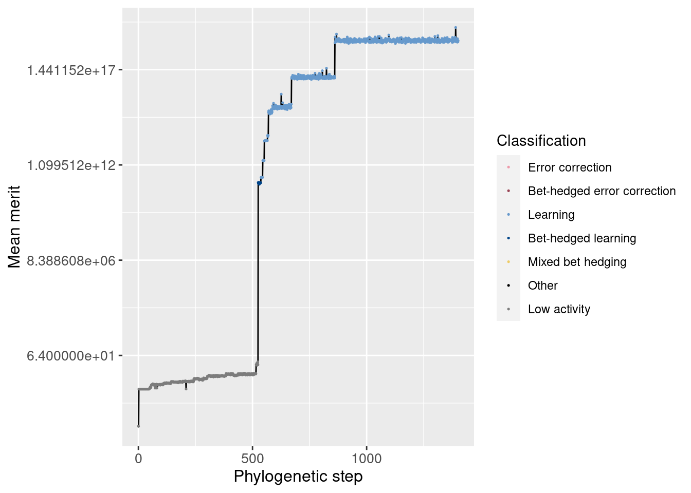
Additionally, we can zoom in to view just the potentiation window. The vertical dashed line shows the main potentiating step, step 484, while the horizontal dashed line shows average merit at that step for easier comparisons. Note that this plot is not logarithmic.
potentiation_mask = df_lineage$depth >= potentiation_window_start & df_lineage$depth <= potentiation_window_stop
target_step_merit_mean = df_lineage[df_lineage$depth == potentiation_target,]$merit_mean
ggplot(df_lineage[potentiation_mask,], aes(x = depth)) +
geom_vline(aes(xintercept = potentiation_target), linetype = 'dashed', alpha = 0.5) +
geom_hline(aes(yintercept = target_step_merit_mean), linetype = 'dashed', alpha = 0.5) +
geom_line(aes(y = merit_mean)) +
geom_point(aes(y = merit_mean, color = seed_classification), size = 1) +
scale_color_manual(values = color_map) +
theme(axis.text = element_text(size = 10)) +
theme(axis.title = element_text(size = 12)) +
labs(color = 'Classification') +
ylab('Mean merit') +
xlab('Phylogenetic step')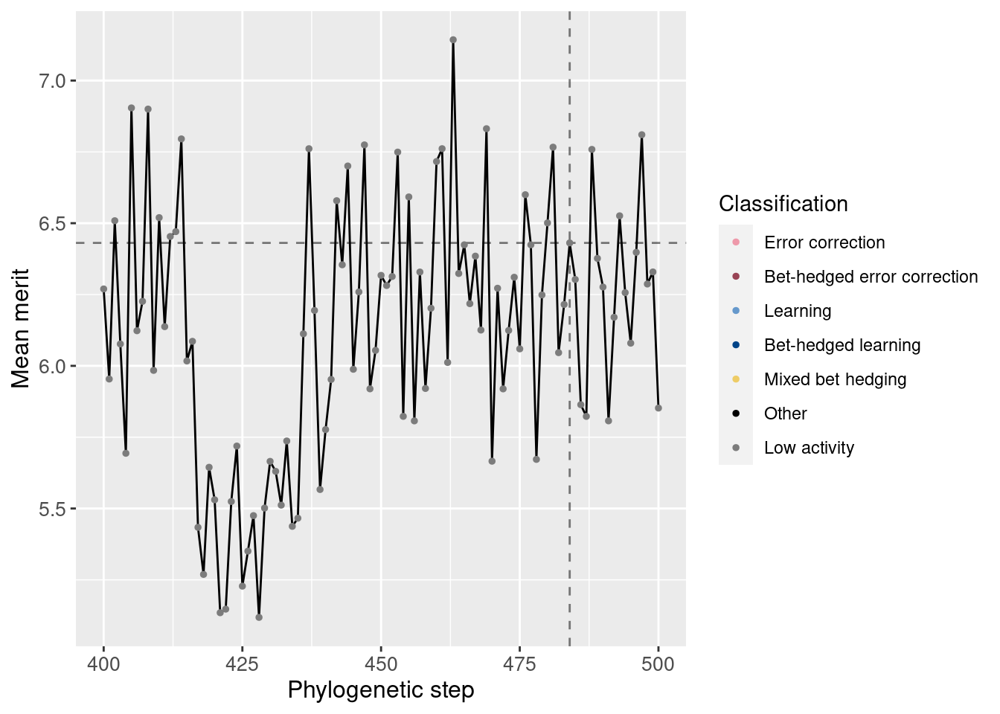
We do not see substantial differences in fitness around step 484.
While it may not be needed for this lineage, we can also normalize the merit based on the potentiating step. Remember that one additional correct state confers a merit bonus of 10%. Here, we can see that the fluctiations around the potentiating mutation generally fall in that +/-10% range.
ggplot(df_lineage[potentiation_mask,], aes(x = depth)) +
geom_vline(aes(xintercept = potentiation_target), linetype = 'dashed', alpha = 0.5) +
geom_hline(aes(yintercept = 1), linetype = 'dashed', alpha = 0.5) +
geom_line(aes(y = merit_mean / target_step_merit_mean)) +
geom_point(aes(y = merit_mean / target_step_merit_mean, color = seed_classification), size = 1) +
scale_color_manual(values = color_map) +
theme(axis.text = element_text(size = 10)) +
theme(axis.title = element_text(size = 12)) +
labs(color = 'Classification') +
ylab('Mean merit') +
xlab('Phylogenetic step')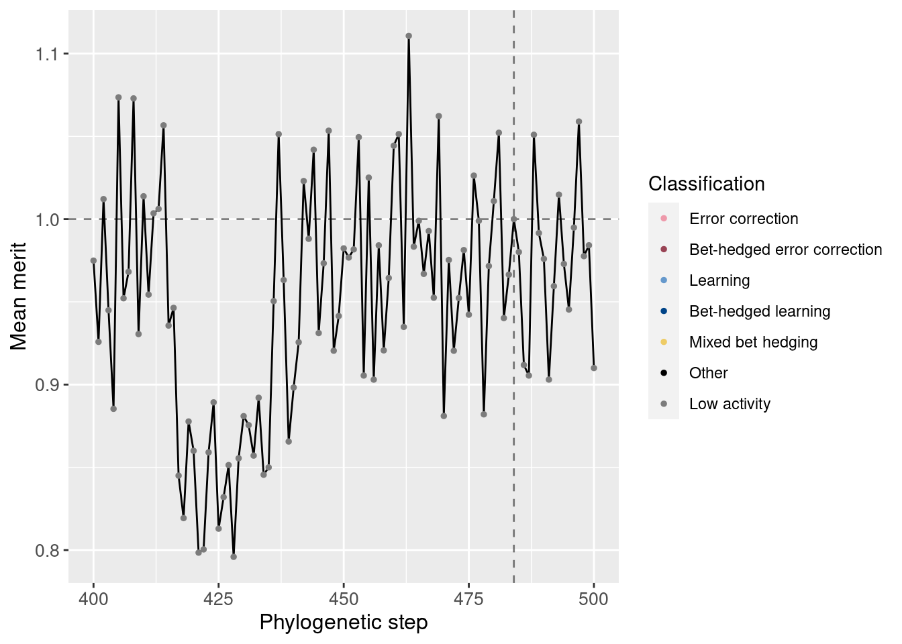
3.3.2 Correct states
Similarly, we can look at the number of correct states both overall and in the potentiation window:
Overall:
ggplot(df_lineage, aes(x = depth)) +
geom_line(aes(y = correct_doors_mean)) +
geom_point(aes(y = correct_doors_mean, color = seed_classification), size = 0.25) +
scale_color_manual(values = color_map) +
theme(axis.text = element_text(size = 10)) +
theme(axis.title = element_text(size = 12)) +
labs(color = 'Classification') +
ylab('Mean correct states') +
xlab('Phylogenetic step')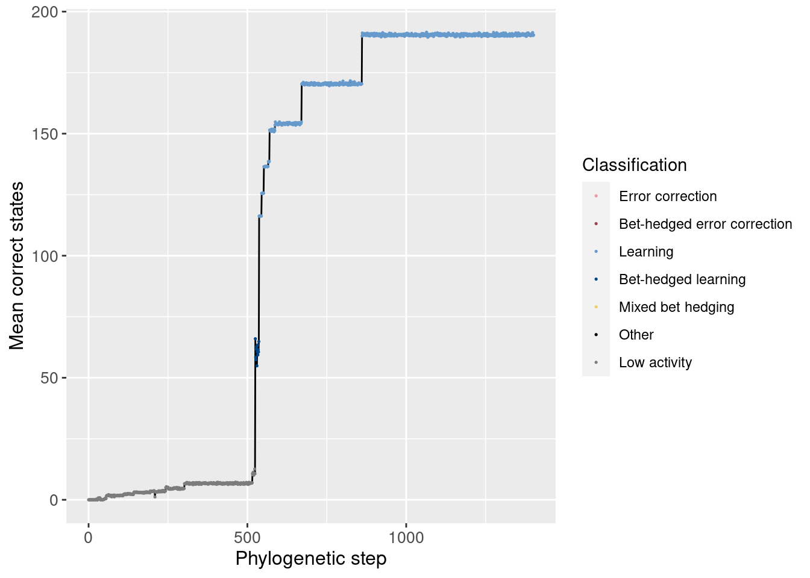
Potentiation window (dashed lines show the main potentiating mutation):
target_step_correct_doors_mean = df_lineage[df_lineage$depth == potentiation_target,]$correct_doors_mean
ggplot(df_lineage[potentiation_mask,], aes(x = depth)) +
geom_vline(aes(xintercept = potentiation_target), linetype = 'dashed', alpha = 0.5) +
geom_hline(aes(yintercept = target_step_correct_doors_mean), linetype = 'dashed', alpha = 0.5) +
geom_line(aes(y = correct_doors_mean)) +
geom_point(aes(y = correct_doors_mean, color = seed_classification), size = 1) +
scale_color_manual(values = color_map) +
theme(axis.text = element_text(size = 10)) +
theme(axis.title = element_text(size = 12)) +
labs(color = 'Classification') +
ylab('Mean correct states') +
xlab('Phylogenetic step')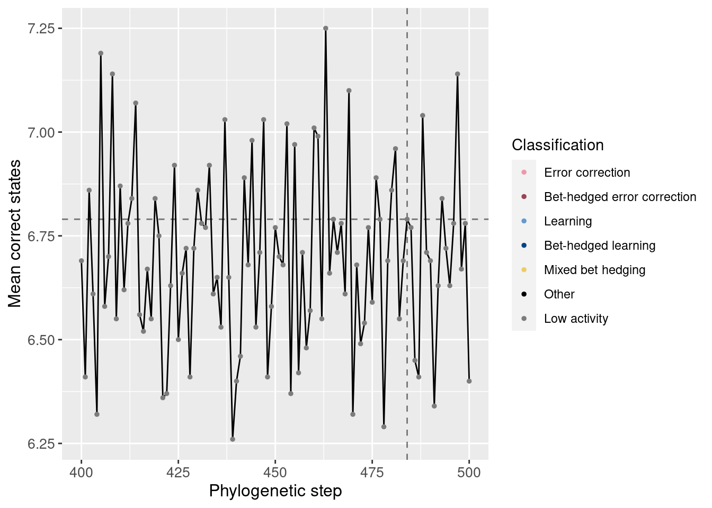
We see no noticable change in the number of correct states around the potentiating mutation.
3.3.3 Incorrect states
Just like our analysis of correct states, we can also look at the average incorrect states over time. By incorrect states, we mean the wrong movements while in a left, right, or forward state. Incorrect movements from a backward state are tracked separately.
Overall:
ggplot(df_lineage, aes(x = depth)) +
geom_line(aes(y = incorrect_doors_mean)) +
geom_point(aes(y = incorrect_doors_mean, color = seed_classification), size = 0.25) +
scale_color_manual(values = color_map) +
theme(axis.text = element_text(size = 10)) +
theme(axis.title = element_text(size = 12)) +
labs(color = 'Classification') +
ylab('Mean incorrect states') +
xlab('Phylogenetic step')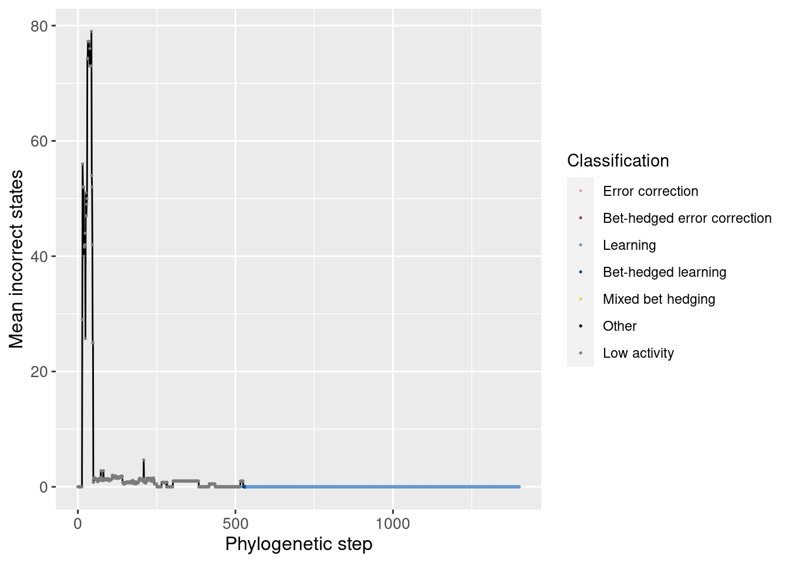
Potentiation window:
target_step_incorrect_doors_mean = df_lineage[df_lineage$depth == potentiation_target,]$incorrect_doors_mean
ggplot(df_lineage[potentiation_mask,], aes(x = depth)) +
geom_vline(aes(xintercept = potentiation_target), linetype = 'dashed', alpha = 0.5) +
geom_hline(aes(yintercept = target_step_incorrect_doors_mean), linetype = 'dashed', alpha = 0.5) +
geom_line(aes(y = incorrect_doors_mean)) +
geom_point(aes(y = incorrect_doors_mean, color = seed_classification), size = 1) +
scale_color_manual(values = color_map) +
theme(axis.text = element_text(size = 10)) +
theme(axis.title = element_text(size = 12)) +
labs(color = 'Classification') +
ylab('Mean incorrect states') +
xlab('Phylogenetic step')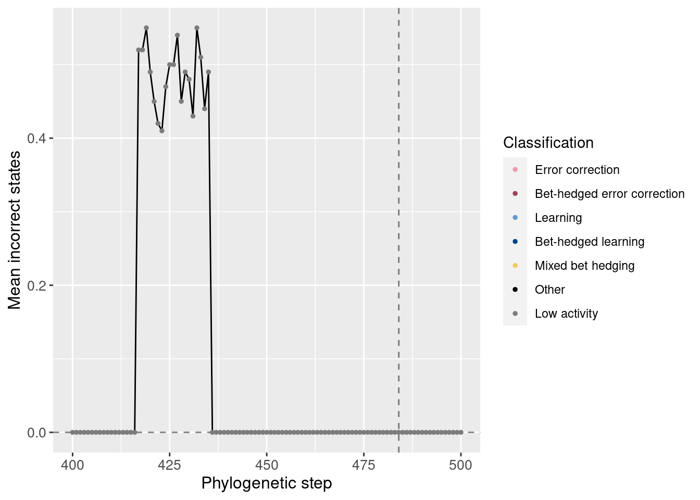
3.4 Replay data
Now that we know what the lineage looks like, we can begin to break down the replay data.
3.4.1 Exploratory replays
We started by seeding 50 replay replicates for every 50th step along the lineage in the window [50, 1000]. The data for step 0 comes from the initial 200 replicates.
Here we show the potentiation over time for those exploratory replays:
df_learning_summary = classification_summary[classification_summary$seed_classification == seed_class_learning,]
df_learning_summary$lineage_classification = NA
# Assign each depth its classification from the lineage data
for(depth in unique(df_learning_summary$depth)){
df_learning_summary[df_learning_summary$depth == depth,]$lineage_classification = df_lineage[df_lineage$depth == depth,]$seed_classification
}
# Create masks
mask_learning_summary_focal = df_learning_summary$depth %in% potentiation_window_start:potentiation_window_stop
mask_learning_summary_initial = df_learning_summary$depth %% 50 == 0
ggplot(df_learning_summary[mask_learning_summary_initial,], aes(x=depth)) +
geom_line(mapping=aes(y = frac*100), size = 1.05) +
geom_point(mapping=aes(y = frac*100, color = as.factor(lineage_classification)), size = 2.5) +
scale_color_manual(values = color_map) +
scale_fill_manual(values = color_map) +
scale_y_continuous(limits = c(-0.1,100)) +
xlab('Phylogenetic step') +
ylab('Percentage of replays that evolve learning') +
labs(color = 'Classification') +
labs(fill = 'Classification') +
theme(axis.text = element_text(size = 12)) +
theme(axis.title = element_text(size = 14)) +
theme(legend.position = 'none')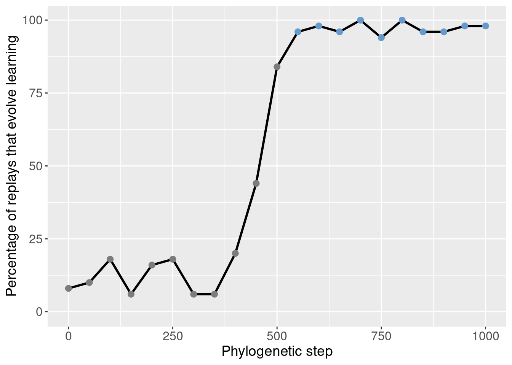
We can then identify the potentiation window based on the points with the most potentiation gain.
Here we selected steps 400-500 (green shaded region):
ggplot(df_learning_summary[mask_learning_summary_initial,], aes(x=depth)) +
annotate("rect", xmin=potentiation_window_start, xmax=potentiation_window_stop, ymin=-Inf, ymax=Inf, alpha=0.2, fill="#64e164") +
geom_line(mapping=aes(y = frac*100), size = 1.05) +
geom_point(mapping=aes(y = frac*100, color = as.factor(lineage_classification)), size = 2.5) +
scale_color_manual(values = color_map) +
scale_fill_manual(values = color_map) +
scale_y_continuous(limits = c(-0.1,100)) +
xlab('Phylogenetic step') +
ylab('Percentage of replays that evolve learning') +
labs(color = 'Classification') +
labs(fill = 'Classification') +
theme(axis.text = element_text(size = 12)) +
theme(axis.title = element_text(size = 14)) +
theme(legend.position = 'none')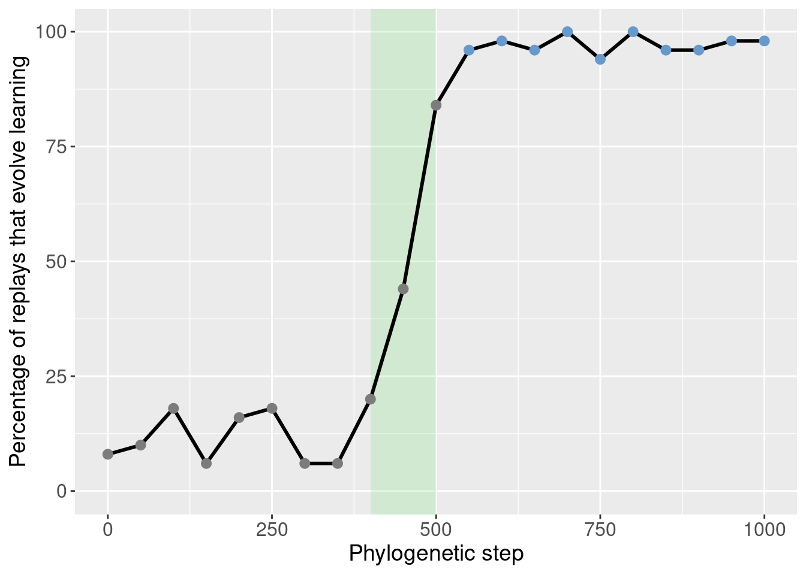
3.4.2 Targeted replays
With the potentiation window identified, we seeded targeted replays.
For the targeted replays, we seeded 50 replay replicates from every step in the potetiation window. This gives us an idea of how individual steps in the phylogney affected potentiation.
ggplot(df_learning_summary[mask_learning_summary_focal,], aes(x=depth)) +
annotate("rect", xmin=potentiation_window_start, xmax=potentiation_window_stop, ymin=-Inf, ymax=Inf, alpha=0.2, fill="#64e164") +
geom_vline(aes(xintercept = potentiation_target), linetype = 'dotted') +
geom_line(mapping=aes(y = frac*100), size = 1.05) +
geom_point(mapping=aes(y = frac*100, color = as.factor(lineage_classification)), size = 2.5) +
scale_color_manual(values = color_map) +
scale_fill_manual(values = color_map) +
scale_y_continuous(limits = c(-0.1,100)) +
xlab('Phylogenetic step') +
ylab('Percentage of replays that evolve learning') +
labs(color = 'Classification') +
labs(fill = 'Classification') +
theme(axis.text = element_text(size = 12)) +
theme(axis.title = element_text(size = 14)) +
theme(legend.position = 'none')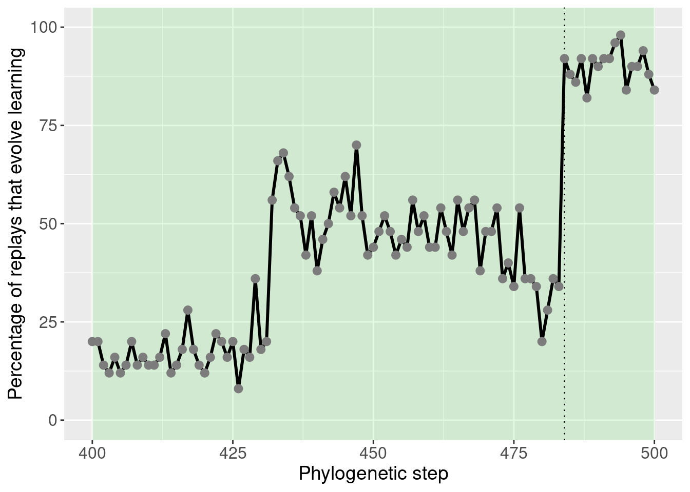
This plot was extensively discussed in the paper, so we refrain from additional discussion here.
3.4.3 Potentiation of other behaviors
While the paper focused on learning, it can be useful to see how the potentiation of other behaviors changes before learning takes over.
These plots are included as inspiration for future work.
mask_focal = classification_summary$depth %in% potentiation_window_start:potentiation_window_stop
mask_initial = classification_summary$depth %% 50 == 0
ggplot(classification_summary[mask_initial,], aes(x=depth, color = seed_classification_factor)) +
geom_line(mapping=aes(y = frac), size=1.2) +
geom_point(mapping=aes(y = frac), size = 2) +
scale_color_manual(values = color_map) +
scale_fill_manual(values = color_map) +
scale_y_continuous(limits = c(-0.1,1)) +
xlab('phylogenetic step') +
ylab('percentage of replays that evolve learning') +
labs(color = 'Classification') +
theme(axis.text = element_text(size = 12)) +
theme(axis.title = element_text(size = 14))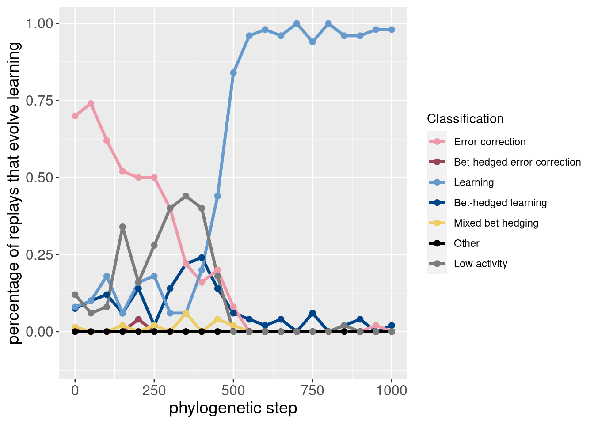
Here is the same data, but plotted as an area plot:
ggplot(classification_summary[mask_initial,], aes(x = depth, y = frac, fill = seed_classification_factor)) +
geom_area() +
scale_fill_manual(values = color_map) +
scale_x_continuous(expand = c(0,0)) +
scale_y_continuous(expand = c(0,0)) +
xlab('phylogenetic step') +
ylab('percentage of replays that evolve learning') +
labs(fill = 'Classification') +
theme(axis.text = element_text(size = 12)) +
theme(axis.title = element_text(size = 14))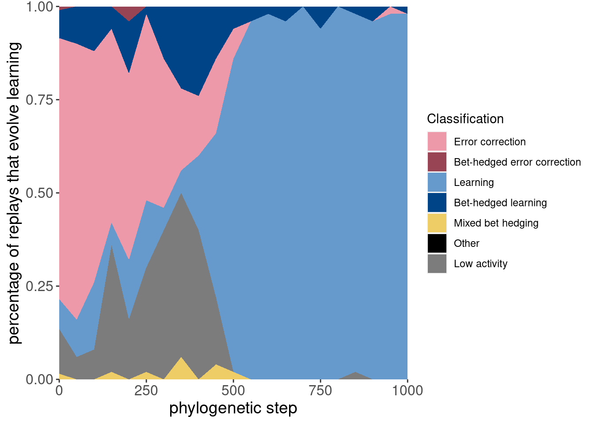
Here are the same two plots showing the potentiation window and the targeted replays:
ggplot(classification_summary[mask_focal,], aes(x=depth, color = seed_classification_factor)) +
geom_line(mapping=aes(y = frac), size=1.2) +
geom_point(mapping=aes(y = frac), size = 2) +
scale_color_manual(values = color_map) +
scale_fill_manual(values = color_map) +
scale_y_continuous(limits = c(-0.1,1)) +
xlab('phylogenetic step') +
ylab('percentage of replays that evolve learning') +
labs(color = 'Classification') +
theme(axis.text = element_text(size = 12)) +
theme(axis.title = element_text(size = 14))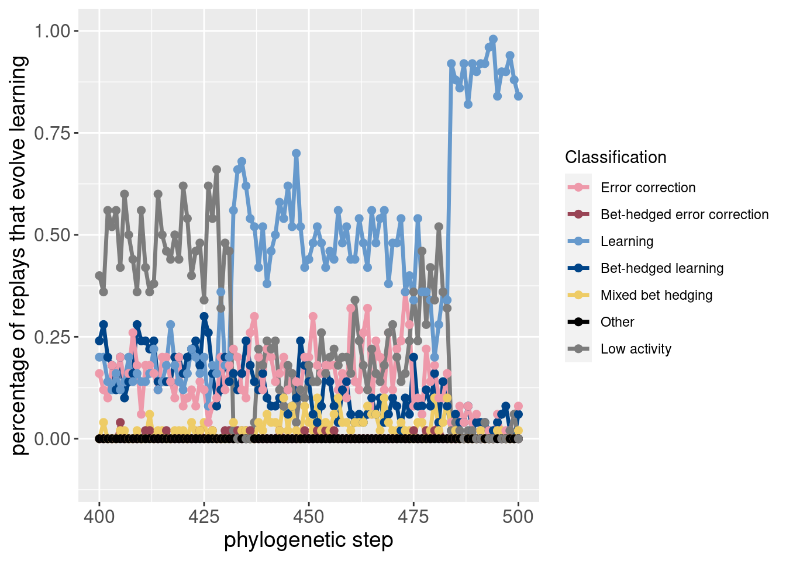
ggplot(classification_summary[mask_focal,], aes(x = depth, y = frac, fill = seed_classification_factor)) +
geom_area() +
scale_fill_manual(values = color_map) +
scale_x_continuous(expand = c(0,0)) +
scale_y_continuous(expand = c(0,0)) +
xlab('phylogenetic step') +
ylab('percentage of replays that evolve learning') +
labs(fill = 'Classification') +
theme(axis.text = element_text(size = 12)) +
theme(axis.title = element_text(size = 14))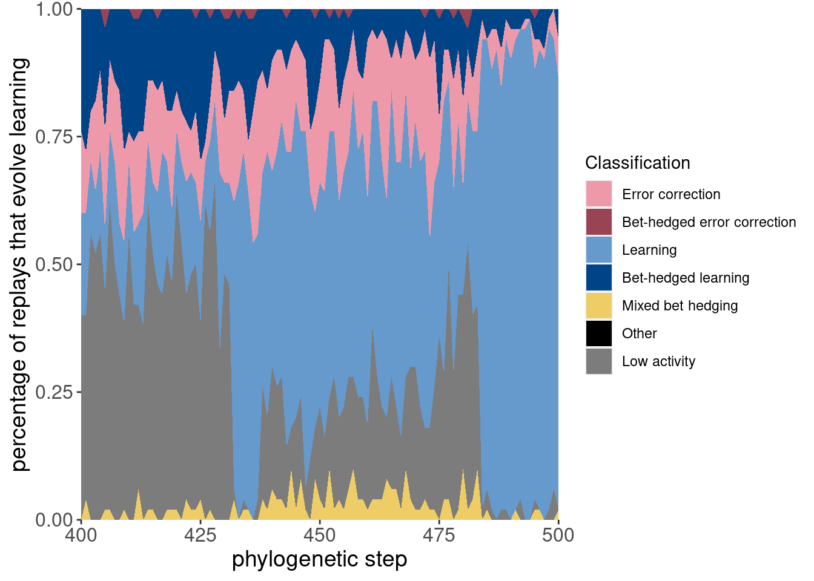